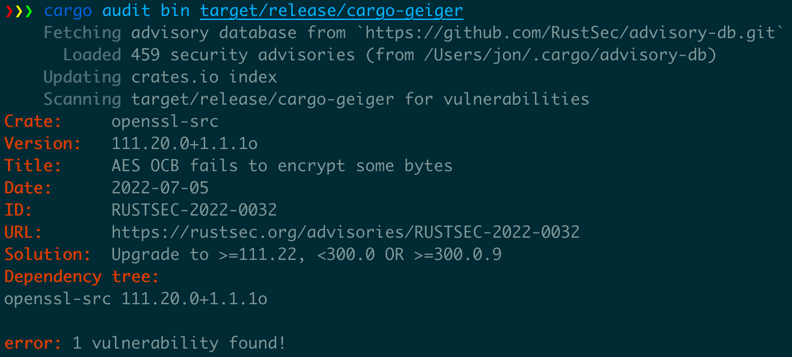

Introduction
What is Software Supply Chain Security?
A software supply chain is composed of the components, libraries, tools, and processes used to develop, build, and publish a software artifact.1
Although not a recent notion, they have taken a growing focus due to the visibility of security vulnerabilities, particularly affecting the software supply chain (log4j, SolarWinds, etc.).
Diagram of the software supply chain risks by the SLSA project2:

About this guide
This guide is not a general introduction to the supply chain security topic. To learn more about it, you can have a look at introductions by vendors like Red Hat or snyk, or the OpenSSF and SLSA projects.
It is aimed at Rust developers, whether working on libraries in the ecosystem or on programs for end-users, and some parts of the guide are only applicable to one of these situations. It focuses on currently available tooling for the Rust ecosystem and provides actionable items whenever possible.
Other resources
- Comparing Rust supply chain safety tools (May 2022, by llogiq)
- Rust Supply Chain Security (April 2023, by Bitfalter)
Software Supply Chain on Wikipedia (en) (under Creative Commons Attribution-ShareAlike License 3.0)
Supply chain Levels for Software Artifacts, Supply chain threats (under Community Specification License 1.0)
Checklist
Legend: 🔒 Must have, âï¸ Should have, 👠Nice to have, ℹ️ Info
Manage dependencies
- 🔒 New dependencies are vetted (details)
- 🔒 Transitive dependencies number is minimized by selecting only the required features (details)
- 🔒 Dependencies are up-to-date (details)
- 🔒 Known vulnerabilities and unmaintained crates are regularly checked (details)
Maintain a crate
-
🔒 The
Cargo.lockfile is committed to your repository (when developing binary programs) (details) -
👠The
rust-toolchain.tomlfile is committed to your repository (when developing binary programs) (details) - 🔒 Crate features allow to only include transitive dependencies required for a given use case (details)
- 🔒 Found vulnerabilities are reported to RustSec (details)
- 🔒 Publication access is kept safe (details)
Build for production
-
🔒 Build uses
--lockedfor reproducibility (details) -
👠Build uses
cargo auditable(details) - ℹ️ Build provides a Software Bill of Materials (details)
Run in production
- âï¸ Production artifacts are regularly checked for vulnerabilities (details)
Manage dependencies
cargo makes it really easy to use dependencies, so the Rust ecosystem tends
to use a lot of them.
Using dependencies is great but comes with security risks, and we'll see how we can mitigate them.
Risks
What can happen with a dependency (either direct or somewhere in the dependency tree).
Malicious crates
What do malicious crates do:
- Advertising
- Stealing crypto wallets on a developers system
- Compromising build systems
- Introducing backdoor in final products
- etc.
In order to be affected, you don't need to push the new crate to your repository or even run your
program locally. Only adding the crate to your local project can compromise the developer's system as
the build.rs file and proc-macros allow arbitrary code execution.
There are several types of malicious crates
-
New crates which look like legitimate ones. Frequently using a name close to a widely used one, a practice called typosquatting.
- Such an incident already happened with the rustdecimal
crate, masquerading as the legitimate
rust_decimalcrate. It contained a payload targeting Gitlab CI platforms.
- Such an incident already happened with the rustdecimal
crate, masquerading as the legitimate
-
New versions of legitimate crates, either by stealing publishing credentials or gaining publication access (after becoming a regular contributor, or sometimes just asking for it).
For now the Rust ecosystem has been relatively preserved for these attacks, but it's likely
linked to the lower visibility and popularity (compared to npm.org for example),
and not to intrinsic differences in the tooling or usage, so you need to be
cautious anyway.
The security of the cargo tooling and crates.io platform is currently being worked on and should continue to improve in the future.
Vulnerable crates
A widely more common case is the presence of exploitable vulnerabilities in one of the dependencies.
- Contains a vulnerability
- Unmaintained and not handling vulnerability reporting
Choosing dependencies
Minimizing dependencies
The safest dependency is the one you don't include. Be careful though, the number of dependencies is not always a good measurement of the attack surface (several crates maintained by the same team don't really multiply the risk). To get an overview of people and organizations with publish access to your dependencies, you can use the cargo supply-chain tool.
In order to minimize the number of dependencies, you can:
- Explore your dependency tree with
cargo tree/cargo supply-chainto see if you spot something to remove - Minimizing the dependency features. Crates tend to include a lot of features by default for convenience, but you can usually remove a part of the dependencies by only selecting the ones you actually need.
Assessing a dependency
When considering adding a dependency, there are a few things
you can do to lower the different risks.
Auditing the code is always an option, but is not scalable, especially including all future version upgrades.
There are several initiatives intending to share the review
work in the community,
like cargo-crev and cargo-vet.
To prevent potential vulnerabilities in memory management,
a focus on unsafe code is often needed in code reviews.
Tooling like cargo-geiger can help
track the use of unsafe code in dependencies.
There is a very good checklist covering many aspects of crate evaluation published (and used internally) by Embark.
Maintaining dependencies over time
Once you have a dependency, you need to keep track of it over time.
Vulnerability and maintenance check
You should also monitor for vulnerabilities and unmaintained crates using cargo audit or cargo deny regularly
(e.g. with a daily CI job).
Github's tooling](https://github.blog/2022-06-06-github-brings-supply-chain-security-features-to-the-rust-community/)
can also help
track security vulnerabilities in your project.
Regular updates
You should also try to stay up to date; this helps get bug fixes and improvements,
and also avoids using unmaintained versions,
ensuring to get easy access to security fixes in case of security vulnerability.
Use cargo outdated to show possible updates.
Maintaining a crate
best practices to secure publication and help crates consumers.
Cargo.lock
If you develop a binary, it is important to commit the Cargo.lock file in your repository.
This will help keep track of the exact versions used and ensure consistent builds.
Features
- allow users of the crate to control transitive dependencies depending on their needs, using features.
Publication
- current risks (no mfa, etc.)
- crates.io token
- publishing permissions on crates.io
Vulnerabilities
- report vulns to rustsec
- they will automatically get to github
Build for production
Embed dependency list in binaries
cargo auditable
limits
Deterministic builds
-
cargo --locked
-
rust-toolchain.toml
-
reproducible builds?
-
github actions security
-
network access in build.rs? sandboxing?
-
ephemeral builder
Software Bill Of Materials
SBOMs for Rust programs usually need to be created from the sources (as the binaries don't contain enough information). Choosing a SBOM format is up to you, but they should be mostly interoperable.
Warning: Due to the way some -sys crate work, some C/C++ native
library may be included in the binary but not visible through
SBOM or vulnerability check tooling.1
CycloneDX
There is an official CycloneDX cargo subcommand to generate a SBOM
from a Rust project source, cargo-cyclonedx
cargo cyclonedx --all --format json --manifest-path Cargo.toml
It understands cargo workspaces and produces a JSON (or XML) file.
To aggregate several files, validate or sign them, you can use the cyclonedx-cli.
cyclonedx merge --input-files *.json --output-file myprogram.cdx.json
SPDX
TODO
Signature
TODO
Running in production
In this section, we will see what we can do to track known vulnerabilities in Rust programs.
It won't cover generic deployment security as there are numerous options (containers, Windows msi/exe installers, Linux rpm/dpkg/etc. packages, etc.) but you should make sure you can verify that deployed artifacts' source and integrity (various artifact signature mechanisms can help).
Audit binaries
Crates
cargo audit has some capacities
to audit Rust binaries for known
vulnerabilities in their dependencies.
It has two operation modes in this context:
- If the binary was build using
cargo-auditable, it will audit for known vulnerabilities in the embedded dependency list. - If not, it will audit for known vulnerabilities in a dependency list extracted from panic messages.
- This is incomplete as not all crates include panics.
- Depending on the compilation options, panic messages may not be available at all.

You can also use more generic tools like trivy which is able to look for
known vulnerabilities in Rust binaries by using the same dependency list built by cargo-auditable.
$ trivy image --security-checks vuln docker-image
2022-08-15T11:32:03.923+0300 INFO Vulnerability scanning is enabled
2022-08-15T11:32:05.031+0300 INFO Number of language-specific files: 1
2022-08-15T11:32:05.032+0300 INFO Detecting rust-binary vulnerabilities...
your_binary (rust-binary)
=========================
Total: 1 (UNKNOWN: 0, LOW: 0, MEDIUM: 0, HIGH: 1, CRITICAL: 0)
┌─────────────────┬─────────────────────┬──────────┬───────────────────┬───────────────┬───────────────────────────────────────────────────┐
│ Library │ Vulnerability │ Severity │ Installed Version │ Fixed Version │ Title │
├─────────────────┼─────────────────────┼──────────┼───────────────────┼───────────────┼───────────────────────────────────────────────────┤
│ websocket │ CVE-2022-35922 │ HIGH │ 0.26.4 │ 0.26.5 │ Untrusted websocket connections can cause an |
│ │ │ │ │ │ out-of-memory (OOM) process abort in a client │
│ │ │ │ │ │ or a server. │
└─────────────────┴─────────────────────┴──────────┴───────────────────┴───────────────┴───────────────────────────────────────────────────┘
Toolchain
You might also want to know which version of the Rust toolchain was used to build a program, for example,
to know if it's affected by a vulnerability in the standard library or the compiler itself.
The compiler version should be added in a .comment section of the file in the future.
Until then, you can look for the version in the strings included in the binary:
$ strings ~/.cargo/bin/rg | grep 'rustc version'
clang LLVM (rustc version 1.68.0 (2c8cc3432 2023-03-06))
Audit SBOMs
It is also possible to look for known vulnerabilities in a SBOM.